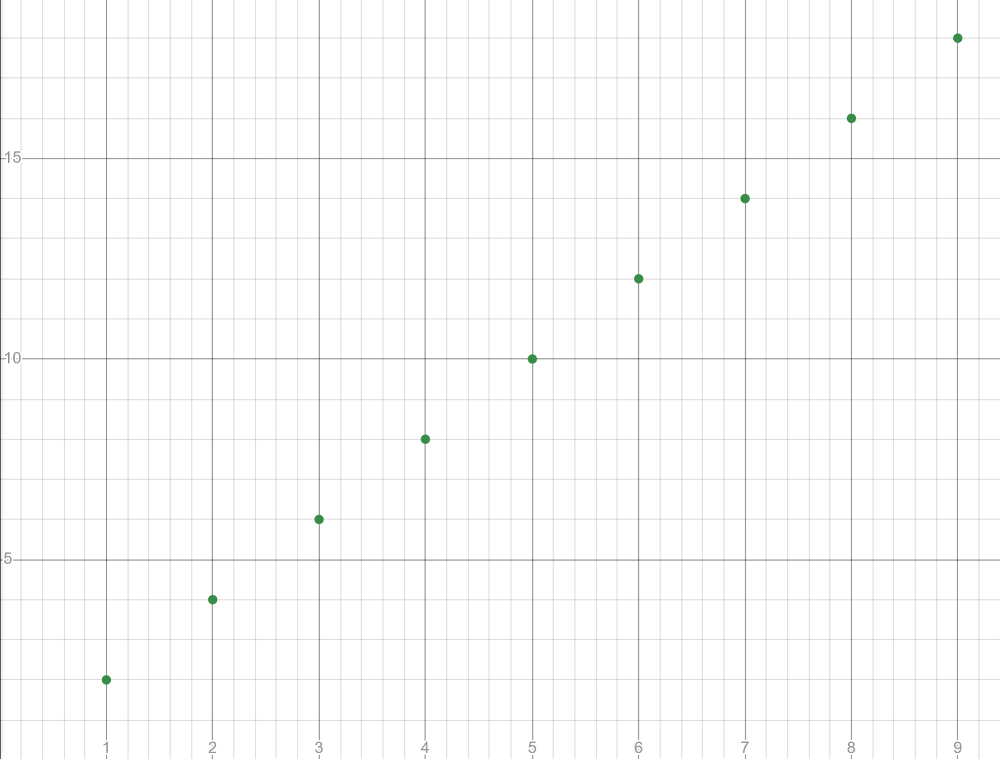
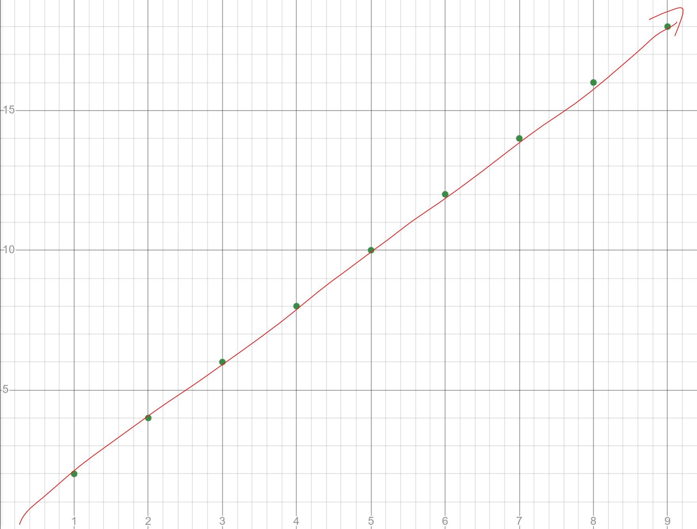
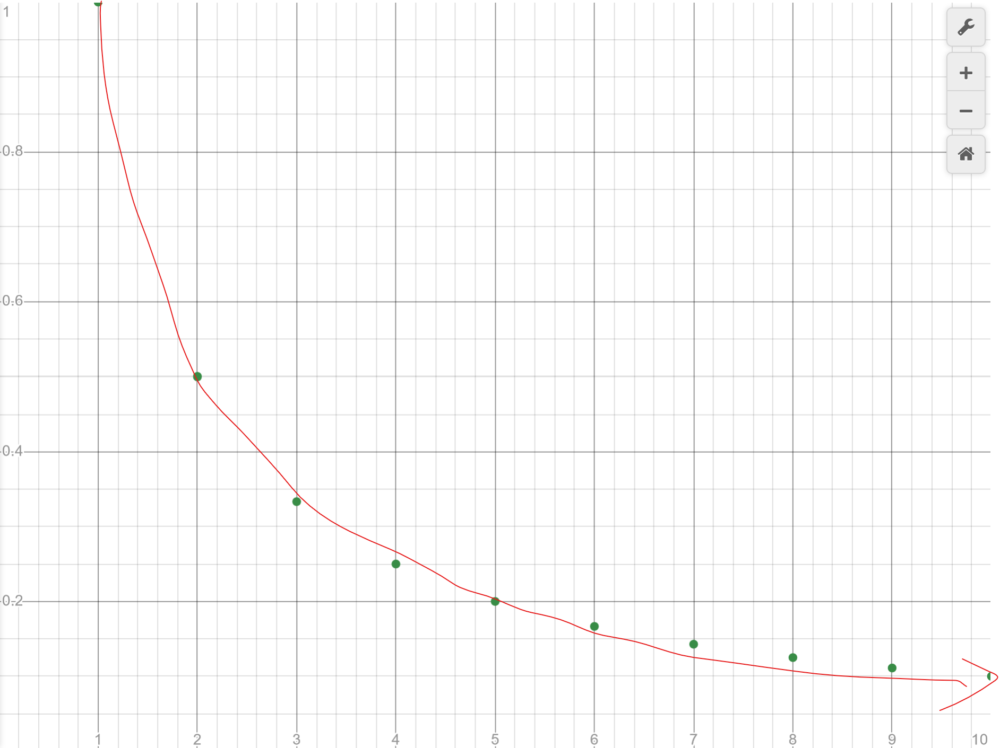

If you took some form of calculus in high school, you've probabily encountered the idea of a limit, likely when defining the derivative for the first time.
$$f'(x) = \lim_{h\rightarrow\infty}\frac{f(x+h)-f(x)}{h}$$To find what the limit is, you would use some technique to get rid of the \(h\) in the denominator and then plug in \(h=0\) into the rest of the equation. If you were really lucky, to find something like \(\lim_{x=2}f(x)\), you would just do the substitution \(f(2)\) and you'd have your answer. But in a more general and rigourus way, what do we mean by a "limit"?
If we're talking about a function, one might say that it's the value that we approach as we trace our finger along the function. This feels a little handwavy, so let's simplify our scenario for now. Instead of functions, let's just talk about sequences.
To create a sequence, we simply assign a value to each natural number. For example, \((1,2,3,4,5,...)\) is the sequence of natural numbers, where 1 is assigned 1, 2 is assigned 2, and so on. The sequence \((2,4,6,8,10,...)\) is the sequence of even numbers, where 1 is assigned 2, 2 is assigned 4, 3 is assigned 6, etc. In a more compact way, we can write this sequence as \(a_n=2n\), indicating that the nth number, \(a_n\), is assigned \(2n\).
Because we can count the natural numbers, we typically don't consider the limits of sequences that approach a finite value, but instead focus on the limits to infinity. Following the example of limits of functions, we might try to plot the sequence on a graph and then trace out the limit. Considering \(a_n=2n\), we have
Tracing the sequence, it looks like the sequence goes off towards infinity.
So we might say that \(\lim_{n\rightarrow\infty} = \infty\). If we instead consider the sequence \(a_n=\frac{1}{n}\), then plotting and tracing it out
then it appears that the sequence is getting smaller and smaller and hence likely is going towards 0 if we were to draw out enough terms, so that \(\lim_{n\rightarrow\infty} a_n = 0\). So far, it seems like a limit is just the value that we get closer and closer to as we approach infinity. This feels like the right idea of what a limit is, but at the same time, it feels very handwavy and unrigorous. The sequnce \(a_n=\frac{1}{n}-1\) also decreases forever, but is always negative. The limit is in fact \(-1\), but do we have a good way to verify that the limit of this sequence isn't \(-\infty\)?
If we were to ask a mathematician what the definition of a limit is, they would give us this:
$$\lim_{n\rightarrow\infty} a_n = k \text{ if for all } \varepsilon>0, \text{ there exists } N\in\mathbb{N} \text{ such that for all } n>N, |a_n-k| < \varepsilon$$But what in the world does this all mean? The following video breaks down this definition.
A walkthough of some example and exercises are to come.